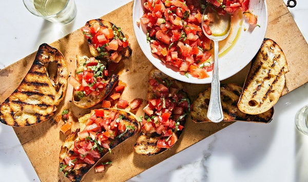

Tomato Bruschetta
This classic recipe is for lazy summer days that beg for moving slowly and snacking often. This bruschetta gets better as it sits for a bit, so make it up to an hour ahead. While most bruschetta recipes have you rub a raw garlic clove on toasted bread, this one calls for making a quick infused oil that’s stirred into the tomatoes and basil, providing a more delicate garlicky note. Pile it all on toasted bread, and enjoy bite after juicy bite.
Ingredients
- 1 pound plum tomatoes (about 4 to 5 large), or another variety of ripe tomato
- 1 teaspoon kosher salt
- 5 tablespoons extra-virgin olive oil
- 2 large garlic cloves, minced
- 8 large basil leaves
- Grilled or toasted crusty bread, for serving
Recipe Instructions
- Core and chop the tomatoes, then transfer to a colander over a bowl or in the sink. Add the salt and gently stir. Let drain for up to 2 hours.
- Meanwhile, make the garlic oil: In a small saucepan, warm the olive oil and garlic over low heat until the garlic is softened and fragrant, about 5 minutes, making sure the garlic doesn’t brown. Set aside to cool.
- Roll the basil leaves up and thinly slice crosswise.
- When the oil is cool and the tomatoes are well drained, combine the tomatoes, garlic oil and basil in a medium bowl. Season with additional salt, to taste. Spoon over toasted bread.
Credit https://cooking.nytimes.com/recipes/1020272-tomato-bruschetta
Return to top
Return to main page